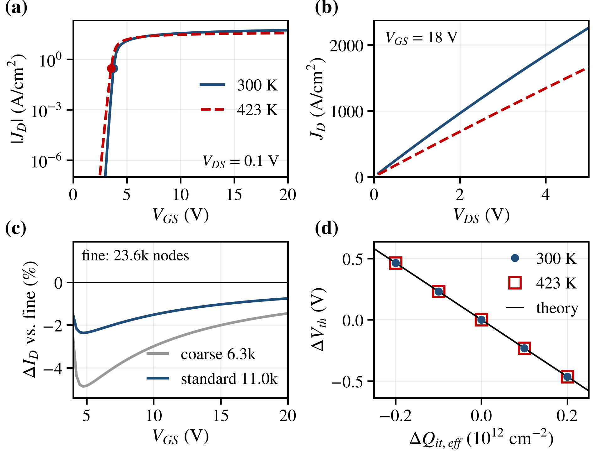

설계 변수에 따른 I–V 특성
(a)
(b)소자 단면
1. 실험 설계
설계 변수와 범위
설계점 640개
변수 하나만 −20~+20 % 바꾼 소자
변수 +20 %에 대한 특징 변화
이 절의 코드
2. 시뮬레이션 데이터
소자별 I–V 특성
I–V 데이터를 불러오는 중입니다.
추출 특징과 설계 변수
시뮬레이션 검증 (논문 그림 2)

이 절의 코드
3. 역추정
시험 소자별 추정값
추정 결과를 불러오는 중입니다.
시험 소자 128개의 평균 오차
같은 DEVSIM 실행 수에서의 오차
드레인 직렬저항을 더한 시험 소자
423 K 물리 가정별 오차 (논문 표 2)
이 절의 코드
4. 표본 선택
학습 곡선
LLM 호출 기록
LLM 호출 기록을 불러오는 중입니다.
마지막 라운드 오차 차이 (논문 표 3)
이 절의 코드
5. 재현
- 저장소를 받고 패키지를 설치한다(Python 3.12).
git clone https://github.com/mseokq23/sic-mosfet-devsim cd sic-mosfet-devsim pip install -r requirements.txt - 논문 그림 1–3과 표를 다시 그리고, 본문·표의 수치 123개를 결과 파일과 대조한다(DEVSIM 계산 없음, 수 초).
python scripts/make_paper_figures.py python scripts/check_paper_numbers.py - 분석 전체를 다시 계산해 커밋된 결과와 비교한다.
bash scripts/reproduce_l1.sh - DEVSIM 시뮬레이션 일부를 다시 계산해 저장된 결과와 비교한다.
python scripts/rerun_check.py
Codespaces에서 열기 논문 수치 대조표 (paper/numbers.csv)
Codespaces는 GitHub 로그인이 필요하며, 저장소의 개발 환경 설정으로 DEVSIM과 고정된 패키지 버전이 설치된다.